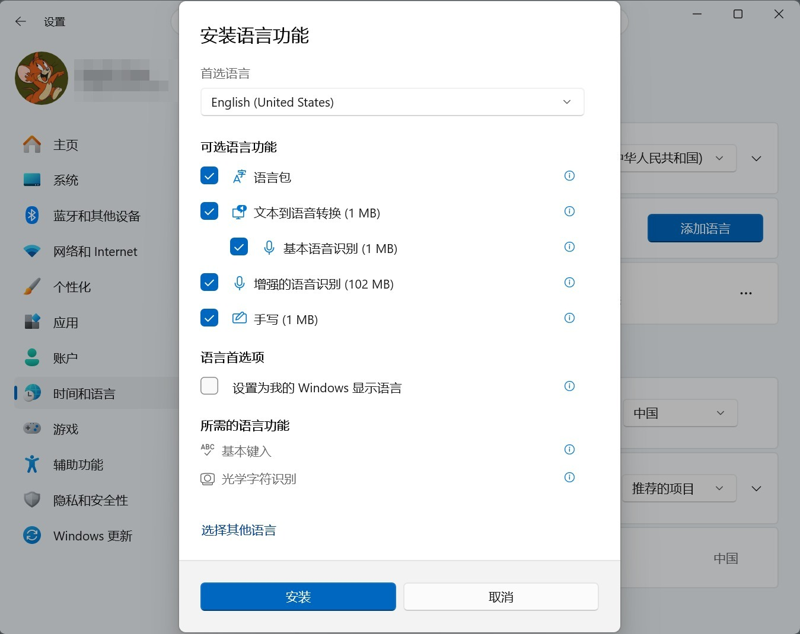

① 语言和区域

打开 设置 → 时间和语言 → 语言和区域。图里系统只有简体中文，所以英语语音还没装。
音色列表里带 Online / Online (Natural) 的语音走在线合成，每次朗读都要联网请求。网络一慢，首字延迟就很明显。
Microsoft Mark / Zira / David（en-US，名字里没有 Online），朗读就不走网络。你截图里这三个已经装好了。适用：打开「音色」弹层后，能看到红框里的三个名字。不用再装任何东西。
Microsoft Mark - English (United States) · en-US（男声，推荐），或 Zira（女声）、David。空格 或点「朗读本句」试听。
en-US，断网也能读。换电脑、或音色列表里只有 Online 条目时，按下面四步装一次。装完以后朗读完全离线。下面图片点击可放大。
打开 设置 → 时间和语言 → 语言和区域。图里系统只有简体中文，所以英语语音还没装。

点「添加语言」→ 搜 English → 选 English (United States) → 下一步。

勾 语言包 + 文本到语音。语音识别、手写不需要可取消；别勾「设为显示语言」。

点「安装」，等进度走完。之后关闭并重开 Chrome / Edge，再打开页面音色列表。
去 设置 → 时间和语言 → 语音 → 添加语音，选 English (United States)；或先装完 Windows Update 再重启浏览器。
它们正是慢的来源，断网还会直接没声音。
Online (Natural)，延迟不可控，不建议用。Microsoft Mark。空格 朗读：有声音 = 离线生效；没声音 = 当前还是在线音色，重选本地音色。体感差异：在线音色点下播放后有「等一下」的首字延迟；本地音色几乎立刻起声。
依据 Microsoft 支持文档 Appendix A: Supported languages and voices ——英语（美国）本地 TTS 语音为 David、Mark（男）与 Zira（女）。
点击空白处或按 Esc 关闭